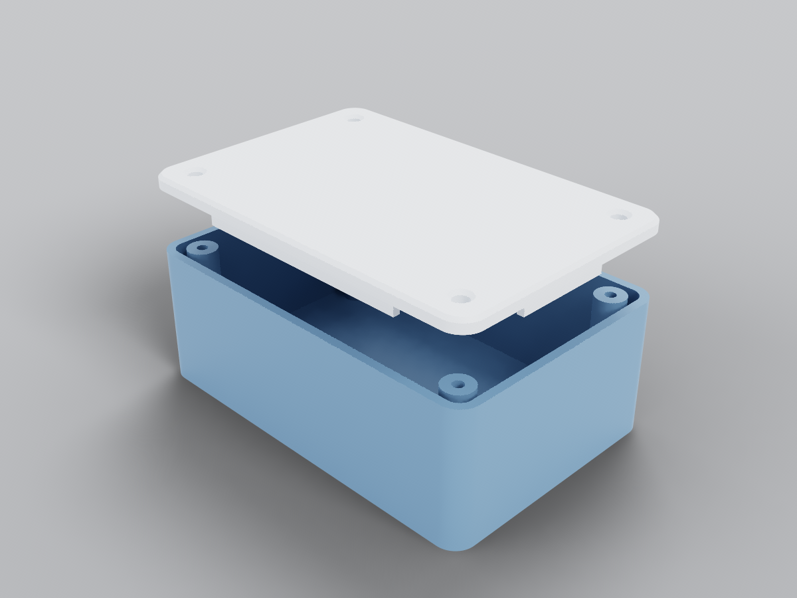
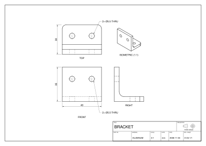
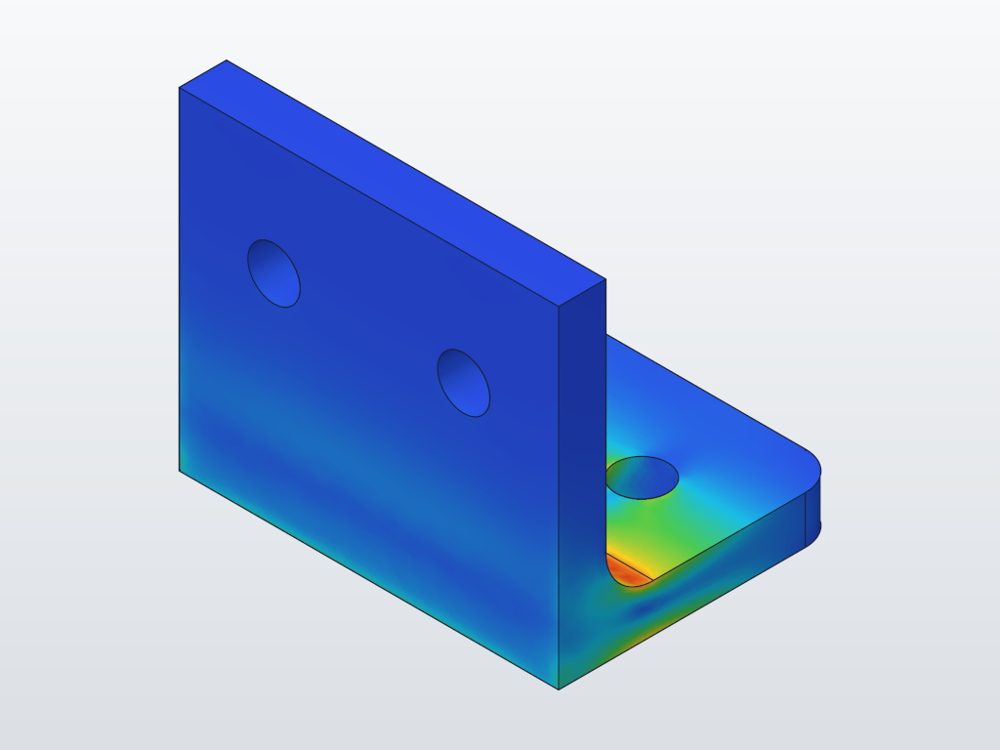

Design physical products with AI.
An agent writes a model as TypeScript, a B-rep kernel builds it, and a live viewer follows every run. Rust engine, Open CASCADE by default, STEP · STL · 3MF · GLB · DXF out. It runs locally, or entirely in your browser.



A model is a script
// src/bracket.ts
import { model, box, cylinder } from "@cad/sdk";
export const bracket = model("bracket", () =>
box(40, 20, 6)
.cut(cylinder(4, 6))
.fillet("|Z", 2)
.label("bracket", { color: "#4a6fa5", material: "aluminum" }),
);
if (import.meta.main) await bracket();
Run it
$ cad run src/bracket.ts
built src/bracket.ts::bracket in 0.12s: 5 ops, 0 hits, 5 misses
parts 1 · bounds 40 × 20 × 6 mm · volume 4498.4 mm³ · mass 12.1 g
id: 0dc50a92-a21f-5895-a245-ebdeb5352f3b
view: http://127.0.0.1:7878/view/0dc50a92-…?token=…
The agent reads the numbers back, takes snapshots and looks at them, checks interference and manufacturability, and exports when it is right. Skills teach it how.
Skills
cad
Designs and edits 3D CAD - parametric parts, assemblies and 2D cut profiles, written as TypeScript with @cad/sdk and shown live in the cad viewer.
fea
Checks whether a part, or an assembly of bonded parts, is strong and stiff enough under its loads, as a linear static stress study (FEA) with gmsh and CalculiX.
pcb
Designs, checks and exports circuit boards and schematics as native KiCad files (.kicad_sch, .kicad_pcb, .kicad_pro).
render
Renders photoreal pictures and turntables of a text-to-cad model - a hero shot, a product or README picture, a transparent cut-out, a posed mechanism, a frame of an animation, a turntable GIF.
robot simulation
Generates and checks robot descriptions (URDF for ROS, MJCF for MuJoCo, SRDF for MoveIt) from a cad model with joints, and checks hand-written ones.
Examples

arm
A 2-link arm: a turntable on a base, an upper arm on a shoulder, a forearm on an elbow riding on it. Each joint moves everything after it. Run: cad run examples/arm.ts, then pose i…
examples/arm.tsblinky_pcb
A circuit board: an LED blinker powered from USB-C. A 555 timer in astable mode flashes the LED about once a second (R1 10k, R2 47k, C1 10u), the two 5.1k resistors on CC1/CC2 ask …
examples/blinky_pcb.ts
bracket
An L-bracket: a base and an upright, an inside fillet, mounting holes in both legs and rounded front corners. Run: cad run examples/bracket.ts
examples/bracket.ts
enclosure
A two-part enclosure: a shelled base with screw bosses and a lid with a locating lip, each its own model (to print or export alone) and together as an assembly. Run: cad run exampl…
examples/enclosure.tsesp32_pcb
A denser board, autorouted: an ESP32-C3 breakout on four layers. USB-C into a CH340C USB-serial bridge and an AMS1117 3.3 V regulator, EN and BOOT buttons, a status LED, and two 8-…
examples/esp32_pcb.ts
fasteners
The standard-parts library (`parts`): an M5 socket-head screw through a counterbored clearance hole in a plate, with a washer and a nyloc nut under it; a 608 bearing; a GT2 pulley;…
examples/fasteners.ts
gear
A spur-gear-like wheel: a hub with trapezoid teeth spread by a polar pattern, lightening holes and a keyed bore. (Straight-flank teeth, not a true involute.) Run: cad run examples/…
examples/gear.ts
gear_train
Gears and a rack coupled to one driver: posing the drive gear turns the idler the other way at the ratio of their radii and slides the rack by the pitch circle. A looping `run` ani…
examples/gear_train.ts